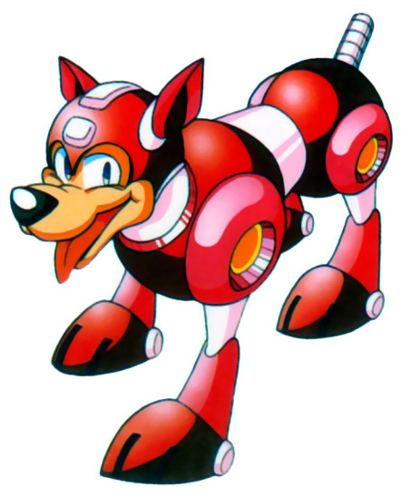

Jira Process
and Etiquette

We will cover:
- Creating a Jira
- Workflow
- Etiquette
- Tools
- Things that don't fit into the above
- Questions
Creating a Jira
Project
- Make sure you are on the correct project
- These *usually* line up with Harvest codes
Issue Type
- Bug: Something is broken
- New Feature: A new enhancement that has to be implemented; Agreed upon with the client or is necessary for the completion of the project
- Task: An action has to be taken (clear the cache, update a server setting, research)
- Trouble Ticket: An issue that IT has to look into
- Site Creation: Used to ask IT to create a QA/Stage instance
Summary
- [High level section] :: [A little more detail]
- Guides :: Homepage Guides tout missing image
- Don't need "bug"
- Don't need project name
Priority
-
Immediate
- New Work: Major functionality is broken and may be blocking another person from completing their task.
- Retainer: Major functionality is broken and a fix is going out in an emergency push in the next 48 hours. This is determined by the PM and TL.
- Urgent: Work that should be completed at the beginning of a sprint
- High: Work that should be hit after Urgent
- Normal: Other Work
- Low: Work that should wait until everything else is done. Usually ok to get bumped back to a later release
Due Date
- Optional: Project specific
- If used, represents when the design or development task should be completed by
-
Things that should be completed before the due date:
- Questions
- Conversations
- Meetings
- Client Agreements
- All of your work
Components
- The feature that the ticket represents
- Guide, News Article, Blog Post
Fix Version
- The release that the ticket is going live in
- Set up by Tech Lead
- Should be blank at ticket creation. TL will triage later
- After triage, every ticket should be in an release or in the backlog. The backlog is where work is scheduled from and long term priorities are planned.
People
- Assignee: The resource that should be working on the ticket
Should be unassigned at ticket creation. TL will triage later - Reporter: The person who created the ticket (This is done automatically)
Environment
- Where the issue is taking place (QA, Stage, Prod)
- Include a URL if it's abnormal (GSB OBP)
Description
- A clear description of the issue
- Should include a Jing screenshot of the issue: http://screencast.com/t/wRWboZwn4JC
- Screenshot should include URL bar so it’s obvious where user is
- Assume the resource working on the ticket has never seen the page before
Steps to Reproduce
- Every step taken to get to the issue
- Should include the full url to the issue
- Any actions taken outside the page should be included (admin, clicked a link)
-
Example:
- Load Homepage https://internetretailer.qa.aistg.com/
- Scroll down to Guide widget
- Scroll the Guide widget to the right
- See missing image
Labels (Tags)
- Can represent a page with many features: Homepage
- Can represent cross-site functionality: Pricing, Ads
- release-notes: Use this tag if your ticket has a manual process for the release; schema migration, copy a file, update a config, etc. The TL will use these tagged tickets in creating the launch checklist
- design-qa/ux-qa: Used to group these passes
- uat: Used to track all bugs that come in from the client during UAT
Workflow
Or, the life of a Jira

A ticket is created
- By: QA, TL, PM
- If you are going to create a ticket, please put all the required information. Don't just paste a 2 sentence blurb from the client.
- Ticket Status is now planned
Planned / Planned for Reopen
- This is new(ish)
-
This is the inbox for TL triage:
- (Re)Opens
- Assigns
- Schedules
- Knows
- If needed, TL can delegate triage to QA
Open / Reopened
- This is the work queue for a resource
- Resource clicks "Start Work". This indicates the ticket is "In Progress" and is currently being worked on.
- TL / QA clicks "Whoops". They didn't mean to create the ticket. The ticket is now closed
In progress
- A resource is currently working on this ticket
-
When work is completed:
- Resource commits code/pushes to source control
- Resource clicks "Finished Work". This changes the status of the ticket to "Ready for QA"
Ready for QA
-
At the end of the dev cycle for a release:
- TL updates QA with the proper release branch
- TL bulk updates Jiras to be "On QA"
On QA
- QA tests all tickets on QA
- If a ticket passes, QA clicks "Passed on QA". This changes the status of the ticket to "Ready for Stage"
- If a ticket fails, QA clicks "Failed on QA. This changes the status of the ticket to "Planned for Reopen". TL will then triage and determine if the work stays in the current release or gets bumped
Ready for Stage
-
At the end of the QA cycle for a release:
- TL merges the release branch into trunk/default/master
- For our branching strategy, click here
- TL updates Stage with this merged code
- Hot deploys to production are now frowned upon
- TL bulk updates Jiras to be "On Stage"
On Stage
- QA tests all tickets on Stage
- If a ticket passes, QA clicks "Passed on Stage". This changes the status of the ticket to "Ready for Production"
- If a ticket fails, QA clicks "Failed on Stage. This changes the status of the ticket to "Planned for Reopen".
Ready for Production
-
Release Time:
- Release happens
- TL bulk updates Jiras to be "On Production"
On Production
- QA tests all tickets on Production and smoke tests
- If a ticket passes, QA clicks "Passed on Production". This changes the status of the ticket to "Verified". QA then closes ticket.
- We've tried to remove this extra step. We can't. Maybe in Jira 6.0?
- If a ticket fails, QA clicks "Failed on Production" and alerts TL. This changes the status of the ticket to "Planned for Reopen".
Lifecycle complete

Seriously,
ALL THE THINGS
Jira Etiquette
Feedback
A ticket is in my queue, but I have a question or need a file from someone else. What do I do?
- Assign the ticket
- Include a descriptive comment. Make sure to add the name of the person in the comment. This keeps context as a ticket may change multiple hands.
- This resource should assign the ticket back to you with an answer
- If you've been waiting a bit, follow up: Aim, Email, Breathing heavily behind their desk
Speak Up Early and Often
- Skim your bugs at the beginning of a sprint
- If you have a question, ask early
- If you still have questions, ask often
- Don't wait until the end of a sprint
Notifications
Will I always get an email notification? Not always.
-
If you are not the reporter of a ticket, you will get a notification if:
- A ticket is assigned to you
- You are mentioned (@repy) in a ticket
- A ticket is transitioned through the workflow
- If you are the reporter of a ticket and want these notifications, be sure to "Watch" the ticket
- Why is this? QA/TL generate lots of tickets, which generates massive amount of email, so we turned it off
- If you get an email from Jira, chances are it's important, at least glance at it.
Larger Discussion
What if a ticket requires a wider discussion?
-
Basecamp, baby:
- Start a thread
- Include a link to the Jira
- Add a link to the Basecamp thread as a comment in the ticket
- Grab the people you need and TALK
Check Yo' Queues
-
Who?
- Tech
- Design
- UX
- PM
Other Etiquette
- If you are IMing or Emailing someone about a ticket, include a link to it. You are probably already on the page and it saves the other person searching time
- Treat @replies and mentions as non-guaranteed delivery. They are very useful, but if a person HAS to see something, either assign them the ticket or shoot them an email
What is API-User?
- A ticket that came in from aistage.com (more on this later)
- Jenkins: Our automated build tool deployed code that referenced this ticket

Tools
Jira Dashboards
- Everyone is always on the same page
- Quick reference for scrum/weekly status
- Shows high level status with easy access to detail
- What am I doing today?
- What am I doing this week?
- What is the status of the release?
{kind=link}
- Jiras by status. The whole project
- Road Map: Scheduled releases (Next 30 days). Detail
- Jiras by resource. Unclosed tickets.
- Planned Statistics: TL keeps an eye on this
{kind=link}
{kind=link}
- Created VS Resolved
- Status by Release
- Status by Resource
{kind=link}
- Component Breakdown
- Component Priority
- Priority by Release
AiStage.com
Design presentation to client

(We're making this process easier, I promise)
Jira Integration!
- Client does not have direct access to Jira
- This page is powered by a public Jira filter
Issue Submission
Source Control
The first line of your commit msg should be the Jira Number
Easy jump to Git
JiraTabs Bookmarklet
Open every visible ticket in a new tab
Misc

Jira Project Setup
Open a ticket to Josh Rusch :)
IT Jira Items
- Project or Server setup
- QA site requests (as a ticket type site request)
- Configuration changes
- Software installations
- DB dumps, updates
- Regular or Lower priority issues
IT Email Items
- OMFG PRODUCTION IS DOWN
- Adding you to a project in Mortimer
- Your password is borked (you may not be able to get into JIRA to create a ticket for that anyway)
IT Rule of Thumb
Generally, create a Jira for any task that takes more than 2 mins. There should be no action items in an email that take more than 2 minutes to implement, unless it is part of an emergency that Josh is actively working on.